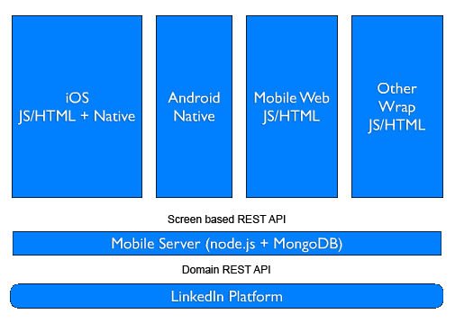
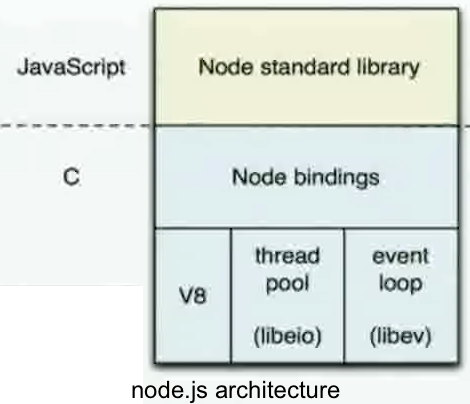
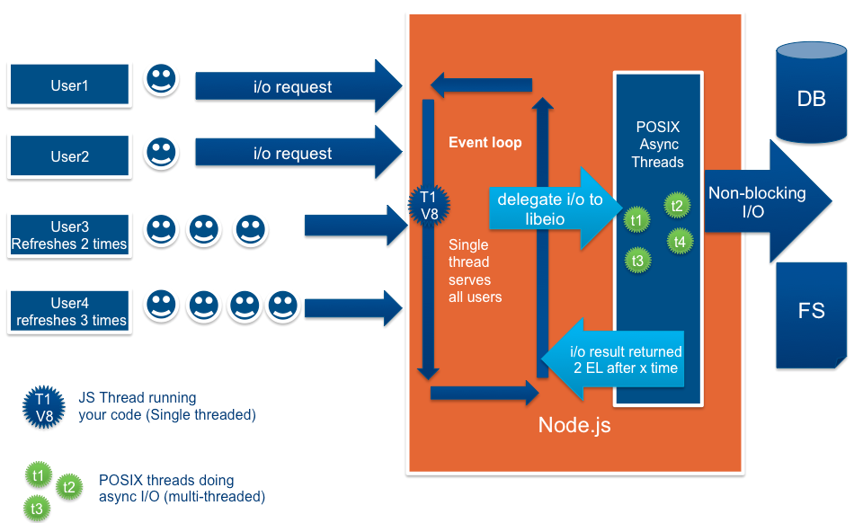
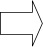
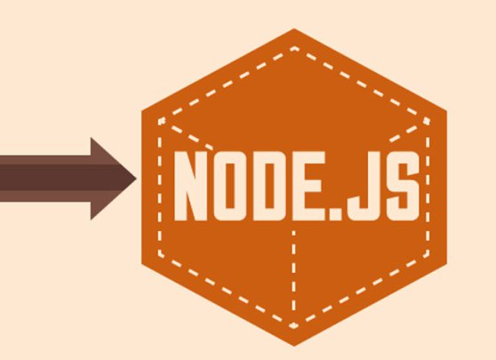

Un exemple, vite !
http://tweetping.net/
1. Présentation de Node
Qu'est-ce que Node
- Projet créé en 2009 par Ryan Dahl (Joyent Inc.)
- Basé sur le langage JavaScript
- Sur-couche de Chrome V8
- Positionné côté serveur
- Piloté par les événements
Node et GitHub

Ceux qui l'utilisent


Objectifs de Node
- Fournir une pile logicielle permettant :
- Aux développeurs web : JavaScript / navigateur
- De développer des serveurs
- Faciliter les fonctionnalités de push
- Proposer une API d'I/O suffisament bas niveau
- Privilégier les appels non bloquants
Chrome V8
- Moteur JavaScript open source
- Utilisé dans les navigateurs (Google Chrome)
- Ou en standalone (Node)
- Compile le JavaScript en code natif
- Optimise à la volée :
- Inlining
- Cache
- Garbage collector
Architecture
Chaîne de traitement
2. Fonctionnalités
Gestionnaire de packages NPM
- NPM : Node Packages Modules
- Gère les dépendances d'une application Node
- Déclarées dans package.json
- Dépôt local dans node_modules/ (cf. NODE_PATH)
- Un peu comme Maven...
- npm install : télécharge les dépendances
- npm publish : publie un module dans le dépôt central
- Scopes : local au projet, ou global

Modèle asynchrone vs multi-thread


Modèle asynchrone - impacts dans le code
// Synchrone
function loadData(id) {
var data = store.find(id);
return data;
}
var result = loadData(3);
console.log('result :', result);
console.log('continue...');

// Asynchrone
function loadData(id, callback) {
store.find(id, function(data) {
callback(data);
});
}
loadData(3, function(result) {
console.log('result :', result);
});
console.log('continue...');
Synchrone – moins gentil
function manageRequest(request) {
var product, model, view, content;
product = store.find(id);
if (product === null) {
content = renderer.render('notFound.html');
return content;
}
model = { id:product._id, name:product.name, price:product.price };
view = 'productDetail.html';
content = renderer.render(view, model);
if (content === null) {
return renderer.render('internalError.html');
}
return content;
}
response.write(manageRequest(request));
Asynchrone – moins gentil
function manageRequest(request, callback) {
var product, model, view, content;
store.find(id, function (product, err) {
if (err) {
content = renderer.render('notFound.html', function (content) {
callback(content);
});
return;
}
model = { id:product._id, name:product.name, price:product.price };
view = 'productDetail.html';
content = renderer.render(view, model, function (content, err) {
if (err) {
renderer.render('internalError.html', function (content) {
callback(content);
});
return;
}
callback(content);
});
});
}
manageRequest(request, function (content) { response.write(content); });
Because nothing blocks, less-than-expert programmers are able to develop fast systems
3. Modules standards
Net, Http
- Net permet d'agir au niveau socket
- En tant que serveur ou client
- Avec des méthodes de base
- Et des événements à écouter : connect, data, end, close
- Http : idem mais au niveau web
- S'appuie sur Net et l'interface générique EventEmitter
- Supporte SSL
Os, Process, Child process
- Os : informations relatives au système d'exploitation
- Type, plateforme, mémoire, cpus, interfaces réseaux
- Pas l'habitude d'avoir accès à ces infos ☺
- Process : informations du processus
- Arguments, environnement, propriétaire, entrées sorties standards
- Child process : gestion de processus
- Exec, fork, spawn
Path , File System
- Path : outils pour travailler sur les chemins de fichiers
var monfic = 'mondir/sousdir/name.ext'
var monfic = path.join('mondir', 'sousdir', 'name.ext') - File System :
- Opérations sur les fichiers :
- Lecture répertoire, suppression, écriture, information, liens symboliques
- APIs synchrones ou asynchrones
- Opérations sur les fichiers :
☹
☺
Modules
- Node fournit quelques variables globales
- module, process, mais pas window
- Et un mécanisme pour rendre les choses modulaires
- Inspiration pythonesque ☺
// lib/mymodule.js
module.exports = {
foo: function(){
return 'bar';
}
};
// app.js
var myModule = require('./lib/mymodule');
myModule.foo();
4. Modules tiers
Les incontournables – module async
- forEach, filter, map, log
- nombreux helpers pour la gestion asynchrone
var async = require('async');
async.forEach(['a', 'b', 'c'], function (item, callback) {
if (item === 'b') {
callback(new Error('b forbidden'));
} else {
console.log(item);
callback();
}
}, function (err) {
if (err) { console.log('Error :', err);
} else { console.log('done'); }
});
Résultat :
a
Error : [Error: b forbidden]
c
Résultat avec forEachSeries :
a
Error : [Error: b forbidden]
Asynchrone multi steps – à la main
step1(params, function (result) {
step2(result, function () {
step3(result, function () {
step4(result, function () {
fini();
});
});
});
});
Asynchrone multi steps – pattern / module Step
step1(params, function (result) {
var n = 0;
var next = function () {
n++;
if (n === 3) {
fini();
}
};
step2(result, next);
step3(result, next);
step4(result, next);
});
Step(
function () {
step1(params, this);
},
function (result) {
step2(result, this.parallel());
step3(result, this.parallel());
step4(result, this.parallel());
},
function () {
fini();
}
);
Les incontournables – module commander
- Pour exposer des commandes
- Plus pratique qu'une gestion avec process.argv
commander
.version(version)
.option('-f, --force', 'force on non-empty directory')
.option('-r, --refresh', 'refresh files')
...
.parse(process.argv);
appPath = commander.args.shift() || process.cwd();
if (commander.force) {
force();
...
}
Les incontournables – module Express
- Framework pour application web Node :
- Minimaliste et flexible
- Basé sur le middleware connect
- Définition de routes sophistiquées
- Injection de moteur de rendu : jade, ejs, consolidate
var express = require('express');
var app = express();
app.get('/hello.txt', function(req, res){
res.send('Hello World');
});
app.listen(3000);
Les incontournables – module i18n
- Module de traduction léger, stockage en json
- Facilité d'intégration avec Express
var express = require('express')
, i18n = require('i18n');
i18n.configure({
locales:['en', 'fr'],
register: global
});
app.locals({
__: i18n.__,
__n: i18n.__n
});
app.configure(function() {
app.use(i18n.init);
...
});
var welcome = __('Welcome');
<body>
<h1><%= __('Welcome') %></h1>
</body>
Les incontournables – module mongoose
- API mongodb pour Node :
- Adaptée au côté asynchrone de Node
- Convient à de nombreuses situations : local, distant, cloud
var mongoose = require('mongoose')
, db = require('./db');
var contactDao = {
entityName:'contact',
schema:mongoose.Schema({
firstName:{ type:String }, lastName:{ type:String }, phoneNumber:{ type:String }
}),
getModel:function () {
return db.connection.model(contactDao.entityName, contactDao.schema)
}
};
Simple db helper
var mongoose = require('mongoose')
, db = { connection:null,
connect:function () {
db.connection = mongoose.connect('mongodb://localhost:27017/db');
}, close:function () {
if (db.connection !== null) {
mongoose.disconnect();
db.connection = null;
return true;
} else return false;
}
};
db.connect();
process.on('exit', function (code) {
var result = db.close();
console.log('disconnecting db : ', result);
});
Les incontournables – module socket.io
- Pour jouer avec les web sockets
- Modes dégradés pour les navigateurs
- Ajax, Adobe Flash Socket, iframe
- Facilité d'intégration avec Express
var io = require('socket.io')
.listen(80);
io.sockets.on('connection',
function (socket) {
socket.emit('news', {
hello: 'world'
});
socket.on('my other event',
function (data) {
console.log(data);
});
});// Serveur
<script src="/socket.io/socket.io.js">
</script>
<script>
var socket = io.connect('http://localhost');
socket.on('news', function (data) {
console.log(data);
socket.emit('my other event', {
my: 'data'
});
});
</script><!-- Client -->
5. Développement JavaScript
IDE et debug
- La qualité de l'offre des IDEs est limitée
- Langage non typé, trop dynamique
- Eclipse : top avec Java, bof avec JS
- Faire sans :
- On se contente d'un éditeur (vi, textmate, ...), parfois amélioré
- Faire avec :
- Le choix du moment : WebStorm (Jetbrains)
- Mode Debug (si vraiment nécessaire ☺) :
- En ligne de commande (à-la-gdb)
- Dans WebStorm : plus confortable
Monter en compétence sur JavaScript
- Résister aux tentations
- Se concentrer sur le meilleur
- Et sur le résultat obtenu
- JavaScript Koans :
- Inspiré de Ruby
6. Usine Logicielle
Les composantes essentielles d'une Usine
- Qualité du code : jslint, jshint
- Tests unitaires : mocha, qunit, jstd, jasmine, maven
- Couverture du code : jscoverage, coverjs
- Minifiers et autres compilateurs : less, coffee script, ...
- Outil de build : grunt
- Solutions efficaces pour chaque besoin
- Pas toujours pour l'ensemble...
Déploiement & clouds
- Déployer une application Node :
- En standalone
- Derrière un front
- Pourquoi pas un front Node...
- Cloud :
- Heroku, Nojitsu, AppFog, ...
7. Code Kata
Web Live Chat
8. Exemples et retours d'expérience
Node en synthèse
- Node réinvente les roues des frameworks web
- Un environnement auto-suffisant et très typé
- Le JavaScript en réponse à tous les besoins
Node en synthèse (suite)
- Node impose un modèle non bloquant / mono thread :
- Adapté aux applications réseaux légères et rapides
- Solution de choix pour une application web :
- Dont la compléxité est surtout côté client
- Un éco-système très prolifique
- Mais jeune...
Pas convaincu ?
9. Questions / Réponses
Notre offre JavaScript
- Développement client avec JavaScript et Ajax
- Développement JavaScript avancé
- Développer une application Web Full JavaScript
- Programmer avec jQuery